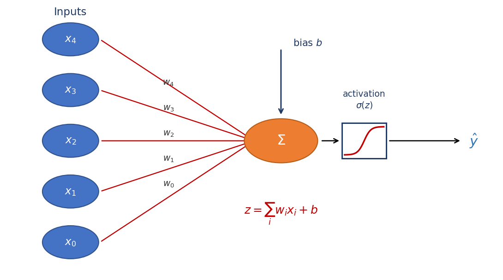
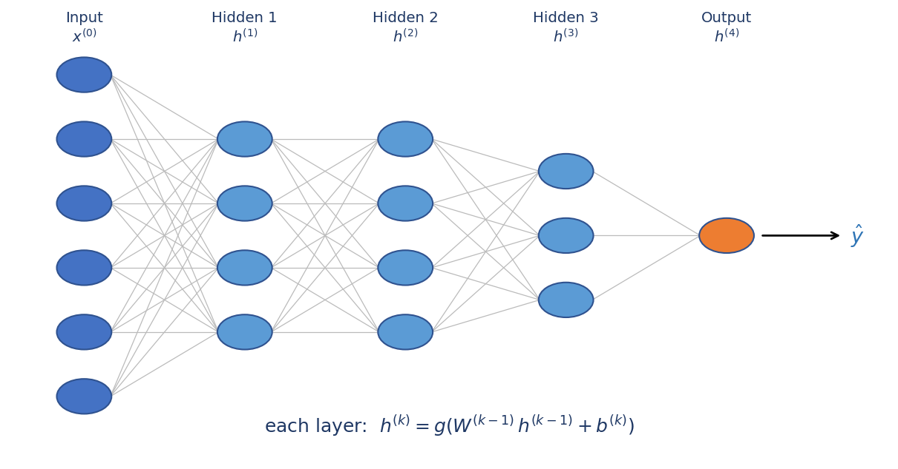
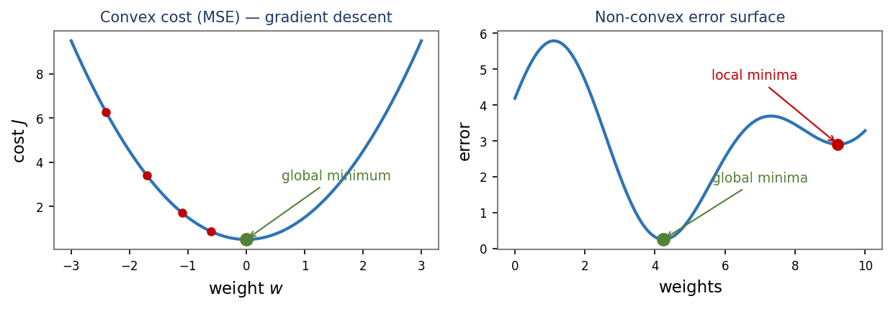

Why activations exist, how data feeds forward, and what a cost function is really doing.
Module 3 · Lecture notes by Dr. Abdulkarim Albanna
Core Neural Nets ~25 minPrerequisites: Module 1 (Linear Algebra) and Module 2 (Numerical Computation). You should be comfortable with matrix–vector multiplication and the idea of gradient descent before starting.

A neural network without activation functions is just a chain of linear operations. And here is the crucial fact from linear algebra: composing linear functions gives another linear function. If layer one computes \(W_1x\) and layer two computes \(W_2(W_1x)\), that is simply \((W_2W_1)x\) — a single matrix multiply. No matter how many layers you stack, the whole network collapses into a single linear layer.
Non-linear activations are what break this collapse. By inserting a non-linear function between the layers, each layer can transform its input in a way the next layer cannot simply undo or absorb. This is what lets a network model non-linear relationships — curves, boundaries, and interactions that no single line could ever capture.
An activation also squashes the weighted sum into a useful interval — for example, near \(1\) for class “Yes” and near \(0\) for class “No” — which keeps activations from growing without bound as signals travel through the network. A good activation is, on top of all that, simple and cheap to compute.
Concretely, each neuron computes a weighted sum of its inputs plus a bias, then passes the result through the activation \(\sigma\) to produce its output:
Stacking depth buys nothing without a non-linearity between the layers. Two linear layers in a row are mathematically identical to a single linear layer — formally, \((W_2(W_1x)=(W_2W_1)x)\). The extra weights add parameters but no new expressive power. Depth only becomes meaningful once a non-linear activation sits between each pair of layers.
Every neuron in a layer computes the same kind of expression — a weighted sum of its inputs, plus a bias, passed through an activation — each with its own weights and bias. For a single neuron that is \(\sigma(w\cdot x + b)\). Writing all the neurons of a layer together — stacking their weight vectors as the rows of a matrix — gives the compact matrix form of the feedforward step:
where \(W\) is the weight matrix (one row per neuron of the next layer), \(b\) is the bias vector (one entry per neuron), \(x^{(0)}\) is the input vector (the previous layer's outputs), and \(\sigma\) is the activation applied elementwise. The result \(x^{(1)}\) becomes the input to the next layer.

Running this rule from layer to layer is forward propagation:
Feedforward propagation means information flows forward — the inputs produce hidden-layer values, which in turn produce the output. Backpropagation is the reverse: the weights are then repeatedly adjusted to minimise the difference between the network's output and the desired output.
Strip away the activation and the feedforward step is just matrix–vector multiplication plus a bias — exactly the operation you practised in the Linear Algebra module. A neural network layer is nothing more exotic than \(Wx + b\) with a non-linear function wrapped around it. Everything you know about matrices carries straight over.
Training a network means finding the weights that minimise an error measure — a number telling us how far the network's predictions are from the true answers. That number is the cost function (also called the loss). For regression, the usual choice is the Mean Squared Error:
Here \(\hat y_i\) is the network's prediction for example \(i\), \(y_i\) is the true target, and we average the squared differences over all \(n\) examples. Squaring makes every error positive and penalises large errors more heavily.

Because that bowl is convex, gradient descent — following the derivative downhill — is guaranteed to find the global minimum. Deep networks have non-convex error surfaces with local minima, but the gradient still tells us which direction reduces the error.
The gradient is the vector of partial derivatives of the cost with respect to each weight. It points in the direction of steepest increase of the cost — so to reduce the cost we step in the opposite direction. That is exactly the gradient descent you met in Module 2: measure the slope, take a small step downhill, repeat until you reach the bottom of the bowl.
Every single weight update in a neural network is driven by \(\partial J/\partial w\) — the derivative of the cost with respect to that weight. This is precisely why activation functions must be differentiable: backpropagation needs their derivative to update the weights. If we could not take the derivative through the activation, we could not compute the gradient, and without a gradient there is nothing to descend. Derivatives are not a side detail of training — they are training.
Work each one by hand before opening the solution — tracing a neuron on paper cements everything above. These mirror the “solve it at home” problems from the course notes.
A single neuron receives inputs \(x=[2,\,1]\) with weights \(w=[0.4,\,0.6]\) and bias \(b=-0.5\), and uses a sigmoid activation \(\sigma(z)=\dfrac{1}{1+e^{-z}}\).
(a) Compute the pre-activation \(z=w\cdot x+b\).
(b) Compute \(\sigma(z)\), given \(e^{-0.9}\approx 0.407\).
(c) If we removed the activation, what single operation would two stacked layers reduce to?
(a) The pre-activation:
(b) Applying the sigmoid with \(e^{-0.9}\approx 0.407\):
(c) Two layers with no activation between them reduce to a single linear layer — the composition \(W_2(W_1x)=(W_2W_1)x\) is just one matrix multiply, so the depth adds no expressive power. This is exactly the collapse from the “Why activations” section.
A layer of two neurons has weight matrix \(W=\begin{bmatrix}0.2 & 0.8\\ 0.5 & -0.4\end{bmatrix}\), input \(x=[1,\,2]\), and bias \(b=[0.1,\,0]\). Compute \(z=Wx+b\) for both neurons, then apply a ReLU activation \(\operatorname{ReLU}(z)=\max(0,z)\). Which neuron is switched off, and why?
Compute each pre-activation from its row of \(W\):
So \(z=[1.9,\,-0.3]\). Applying ReLU elementwise:
Neuron 2 is switched off. Its pre-activation \(z_2=-0.3\) is negative, and ReLU maps every negative input to \(0\) — so that neuron outputs nothing and passes no signal to the next layer.
Given predictions \(\hat y=[0.6,\,0.9,\,0.2]\) and targets \(y=[1,\,1,\,0]\), compute the MSE cost \(J\). Which single prediction contributes most to the cost, and what does that tell the training algorithm?
Compute the squared error for each example:
Average over the \(n=3\) examples:
The first prediction contributes most (its squared error \(0.16\) is the largest term). That tells the training algorithm to adjust the weights hardest in the direction that fixes that example — the largest error dominates the gradient, so it drives the biggest weight update.
Next up: Module 4 — Activation Functions. Now that you know why a network needs a non-linearity and where it sits in the feedforward step, we will meet the specific functions themselves — sigmoid, tanh, ReLU and friends — and see what each one buys you (and costs you) during training.